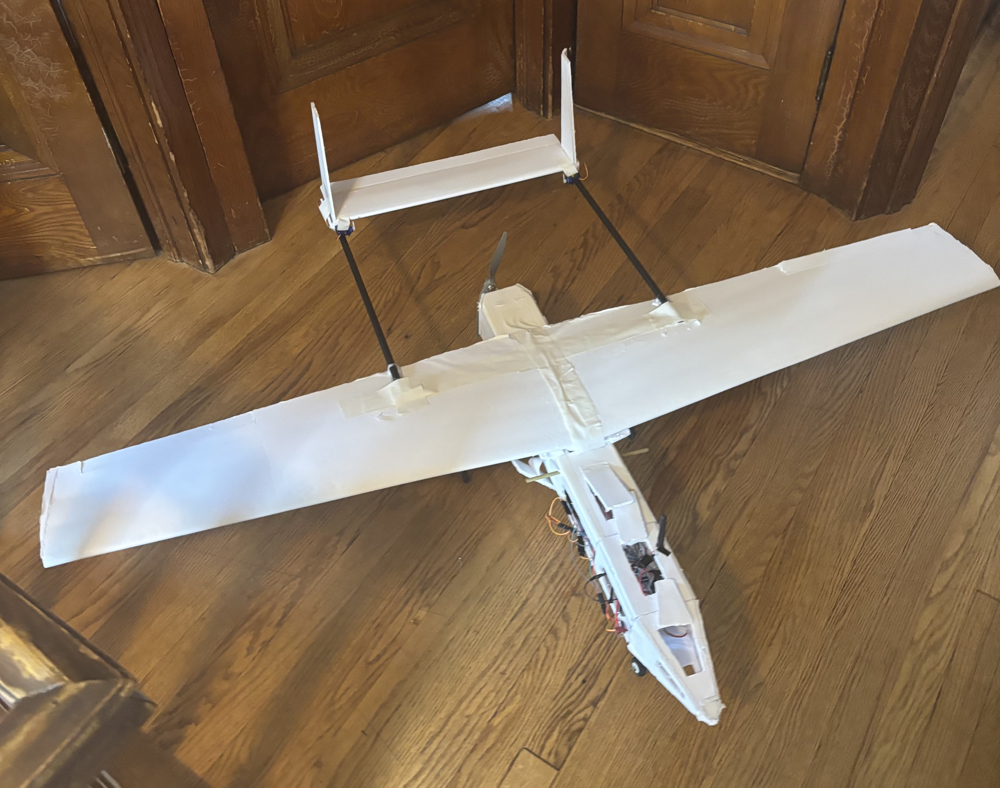
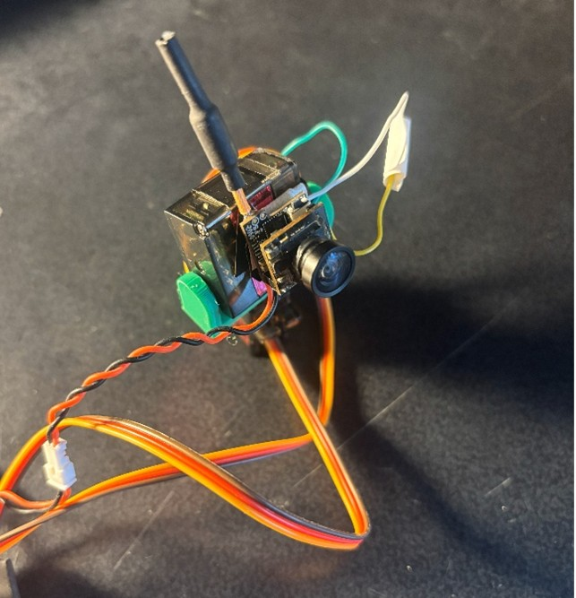

Hi, I’m Kyler
I’m a mechanical engineering student at Boston University with a concentration in aerospace engineering. My interests consist of drone building, robotics, custom electronics, and unique aerodynamic design. I especially like building UAVs, due to the breadth of exposure you get to various different engineering fields, in avionics design, streamlined aerodynamics, and control systems.
Highlights
RC UAV Project
I wanted to have a fully customized drone that could be easily modified with different sensors/devices on digital and analog lines, so I designed, built, wired, and coded a
flyable remote-controlled UAV with the computer being an ESP32 microcontroller.

FPV RC Head-Tracking Gimbal
This project uses a gyroscope and radio to operate a 2-axis gimbal FPV camera which allows for any direction
you are facing to be translated into a specific direction the camera is facing. This allows you to essential operate a camera wirelessly
in real time and follows your head movements.
